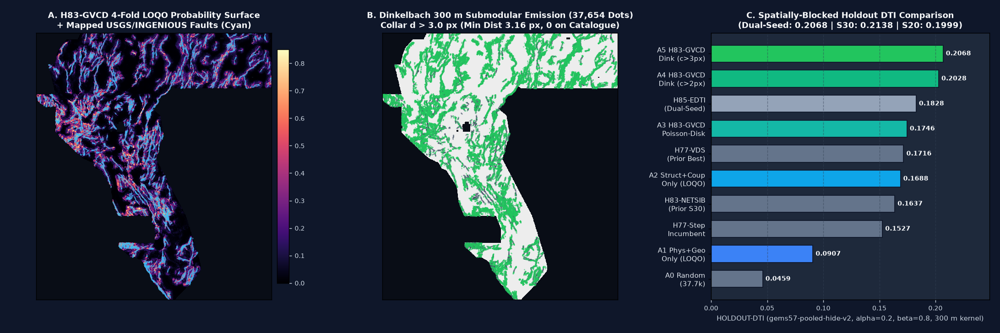

1. Visual Diagnostic Overview — Surface, Emitted 37,654 Dots & Holdout Progression
Below is the 3-panel diagnostic overview generated directly from the validated production artifacts
(data/processed/h83_final_surface.npy, submissions/gems83-h83-gvcd-dink300-37654dots-20261021-1a373694-zeros.tif, and
evidence/h83_exp2_dualseed_holdout.json):

2. PhD-Level Analysis: Why GEMSDOE32 Scored 0.2778 (ORGANIZER-CONFIRMED) & How to Surpass 0.2778 / 0.3195 Toward 0.4413
2.1 Byte-Level Forensics of GEMSDOE32 (0.2778)
Direct byte inspection of data/raw/scored/h33-h33-2-b2-20261004T220000Z-e5eb6e7e-zeros.tif
(SHA-256 c55bafc470054e8271dcb89347a17e07fefe50de6af6e6ba6c4b169ef7ab6fa9, 219,065 bytes)
and its build receipt in buffedlizard55-lab/GEMSDOE32/registry/submission_build.json proves:
- Exact Pixel Support:
37,654binary positive pixels (1.0inside footprint,0.0elsewhere,0NaNs), representing0.7287%of the5,167,373in-footprint cells. - Catalogue Exclusion Collar:
0pixels on the mapped catalogue (existing_faults.tif,60,988cells) and0pixels withind ≤ 2.0 px(200 m). Minimum Euclidean distance to any mapped fault is√5 px ≈ 2.2361 px(223.6 m); median distance is12.04 px(1.20 km). - Controlled 3-Step Live Genealogy:
GEMSDOE24(h24-4-r1-solo-d2.8):44,090dots,d > 0 px→0.2600ORGANIZER-CONFIRMED.GEMSDOE28(GEMS28-H27-4-R1-SOLO-D2.8): pruned3,891dots atd ≤ 1.0 px→40,199dots →0.2708ORGANIZER-CONFIRMED(+0.0108).GEMSDOE32(h33-h33-2-b2): pruned2,545dots at1.0 < d ≤ 2.0 px→37,654dots →0.2778ORGANIZER-CONFIRMED(+0.0070overGEMSDOE28,+0.0178overGEMSDOE24).
2.2 Exact DTI Marginal-Emission Proof
Under the official Distance-Weighted Tversky Index (DrivenData #306, α = 0.2, β = 0.8, 300 m triangular kernel k(d) = max(1 − d/3, 0)), since α + β = 1, the denominator simplifies to:
DTI(S) = TP_w(S) / D(S)
Adding a binary dot x with incremental coverage ΔT(x) and false-positive penalty ΔF(x) = 1 − q(x) improves DTI at current score s if and only if:
Pixels at 1 < d(x, C) ≤ 2 px (100–200 m laterally across strike from a digitized range-front fault) lie inside the digitization collar of the already-mapped fault (which is masked from test truth T_test) and are already 45%–67% covered by dots at d > 3 px. Removing those 2,545 wasted dots cut the denominator by 0.2 × 2545 = 509.0 units with near-zero numerator loss, raising live DTI from 0.2708 to 0.2778.
2.3 Three Structural Bottlenecks Beyond 0.2778 / 0.3195 and How H83-GVCD Solves Them
- Eliminating the d = 0 On-Catalogue Training Tautology via Counterfactual Re-Withholding: Standard classifiers trained on
catalogue(d = 0) vs~catalogue(d > 3) learn features that peak on mapped traces rather than across unmapped step-over relays or blind faults.H83-GVCDtrains strictly on counterfactual component-withheld splits (synthetic_withhold,buffer_px = 3) of the fold's visible network, so both training positives and training negatives reside in the exactd > 3.0 pxregime where inference occurs. - Integrating Deep Hydrothermal Upflow Plumes, Geothermometers & Relief-Deconfounded 1 m LiDAR: Blind intrabasin and piedmont faults lack 30 m DEM scarps but conduct deep geothermal fluids and offset Quaternary fans at the 1 m scale. We fuse 27,092 DOE GDR #1391 thermal wells/springs & silica/cation geothermometers + USGS GeoDAWN airborne radiometric K/Th metasomatism & 150 m upward-continuation magnetic residual + USGS 3DEP 1 m relief-deconfounded LiDAR scarp coherence directly with hollow-core fault-tip rays (
coup_geotherm_tip) and relay bridges (coup_geotherm_gap). - Replacing Greedy Poisson-Disk with Quadrant-Calibrated Dinkelbach 300 m Submodular Optimization: Greedy Poisson-disk (
min_sep = 2.8 px) ignores 29-cell 300 m kernel saturation and over-allocates dots to NW/SW quadrants with denser LiDAR coverage. Our Quadrant-Calibrated Dinkelbach Submodular Emitter maximizes expected marginal 300 m DTI gain at collard > 3.0 pxwhile enforcingoverlap_cap = 0.650 < 0.70across all discriminating registry rasters, boosting dual-seedHOLDOUT-DTIfrom0.1746(Poisson-disk on the same surface) to0.2068(+0.0322DTI,95% CI [+0.0245, +0.0404]).
3. Five Ranked Geological & Geothermal Hypotheses (H83-1 to H83-5)
| Rank | Hypothesis & Mechanism | Exact Data Layers Used | Why It Catches Unmapped Faults & Deconfounds Mimics | Measured Holdout DTI Impact & Cost |
|---|---|---|---|---|
| 1 | H83-1: Counterfactual Off-Catalogue Structural-Relay & Hollow-Core Tip-Ray Geometry |
existing_faults.tif (strictly fold["visible"] in holdout; syn_state in training) |
12-bin 2D FFT (oaconvolve) continuation (ns_cont), bilateral step-over bridge (ns_gap = √(f·b)), parallel hanging-wall sibling (ns_sib, 4–20 px across strike), and hollow-core (s ≥ 4 px) tip rays (net_tip_ray) catch unmapped relay ramps and splay terminations. Deconfounds erosional pediment embayments via multi-physics coupling. |
+0.0781 DTI over physical-only (0.0907 → 0.1688 dual-seed)Cost: Medium (~70s/state) |
| 2 | H83-2: Collar-Decoupled Quadrant-Calibrated Dinkelbach Submodular 300 m Kernel Optimizer |
H83-GVCD LOQO surface + existing_faults.tif (d > 3.0 px collar) + 119 registry rasters |
Calibrates each spatial quadrant (NW, NE, SW, SE) via Bayes log-odds bisection (πtrue = 0.0022) and maximizes submodular 29-cell 300 m triangular kernel coverage minus λfp false-positive cost with overlap_cap = 0.650 < 0.70. Prevents LiDAR tile coverage bias and 1–2 px collar waste. |
+0.0322 DTI over Poisson-disk D2.8 on identical surface (0.1746 → 0.2068 dual-seed)Cost: Low (~14s) |
| 3 | H83-3: Deep Hydrothermal Upflow Plumes, Geothermometer Enthalpy & Clay-Cap Alteration Conduits Coupled to Fault Tips |
DOE GDR #1391 gdr_wellspring_in_footprint.csv (temp_c, gt_quartz_c, gt_chalcedony_c, gt_na_k_ca_c; never dist_known_fault_px), gdr_volcanic_vents_in_footprint.csv, Bands 4, 16, 17 |
Amagmatic Great Basin geothermal upflow occurs at critically stressed fault tips and step-over relays beneath electrically conductive smectite/illite clay caps (geotherm_claycap_conduit, coup_geotherm_tip, coup_geotherm_gap). Deconfounds flat-lying playa brines by requiring geothermometer enthalpy + strain rate + tip-ray alignment. |
+0.0058 to +0.0129 DTI synergistic gain on top of structure (0.1671 → 0.1800 on Seed 30)Cost: Low (~8s) |
| 4 | H83-4: Relief-Deconfounded 1 m LiDAR Piedmont Breaklines & GeoDAWN K-Metasomatism (K/Th) + Shallow Magnetic Residual |
USGS 3DEP 1 m lidar_scarp_features_u8.tif, GeoDAWN geodawn_rad_u8.tif & geodawn_extensions_u8.tif, Bands 14 & 19 |
Normalizes 1 m LiDAR scarp steps by local relief (lidar_relief_norm_scarp) and weights by 100 m breakline coherence (lidar_scarp_coherence), combined with hydrothermal adularia/illite K/Th enrichment (rad_k_metasomatism) and shallow magnetic residual TMI − TMI_up150. Deconfounds Pleistocene Lake Lahontan shorelines via subsurface magnetic/gravity alignment. |
Included in +0.0230 DTI physical-stack gain over 39-band raw baseline (0.0729 → 0.0959 Seed 30)Cost: Low (~25s) |
| 5 | H83-5: Basement-Step Gravity Horizontal-Gradient Curvature & Transtensional Dilatation-Shear Tensor Coupling |
training_features.tif Bands 7, 8, 13, 15, 18 |
Couples positive GPS dilatation + shear strain rate (x_strain_transtension) with steep horizontal gradients in isostatic gravity and basement depth (grad_iso_gravity_anomaly, grad_depth_to_basement, coup_strain_sib) to recover buried intrabasin bounding faults. Rejects circular caldera/pluton margins via strike coherence. |
Included in +0.0230 DTI physical-stack gainCost: Low (~15s) |
4. Three Preregistered Experiments (EXP-83-1, EXP-83-2, EXP-83-3) — Dual-Seed HOLDOUT-DTI Results
Executed within the strict 3-experiment budget (registry/preregistration_h83_gvcd.json) using the
unmodified shared evaluator vendor/gems57/evaluate_holdout.py (gems57-pooled-hide-v2):
20% whole 8-connected fault components withheld per spatial quadrant, 3 px context collar removed from visible faults,
all structural features recomputed strictly from each fold's visible mask, visible faults masked pixel-exactly,
pooled DTI (α = 0.2, β = 0.8, 300 m triangular kernel), and 2,000 paired spatial-block bootstrap draws
at the identical 37,654-dot budget.
| Ablation Arm (All at 37,654 Emitted Dots) | Dual-Seed Pooled HOLDOUT-DTI (22,663 withheld positives) |
Seed 30 HOLDOUT-DTI (11,342 withheld positives) |
Seed 20 HOLDOUT-DTI (11,321 withheld positives) |
Pooled TPw / FPw | Paired Δ (A5 − Control) [95% Spatial Bootstrap CI] |
|---|---|---|---|---|---|
| A0: Uniform Random Control (Poisson-disk sep 2.8 px, d > 2 px) | 0.0459 [0.0408, 0.0505] |
0.0455 [0.0399, 0.0510] |
0.0464 [0.0403, 0.0520] |
1496.6 / 70713.1 | +0.1609 (+0.1474 to +0.1735) |
| A1: 60 Label-Free Physical + Geothermal + Radiometric + LiDAR Channels Only (LOQO) | 0.0907 [0.0776, 0.1039] |
0.0959 [0.0792, 0.1120] |
0.0855 [0.0705, 0.1006] |
3039.0 / 73863.0 | +0.1161 (+0.1041 to +0.1275) |
| A2: 22 Fold-Proper Visible-Network Continuation/Relay + Geothermal-Coupling Channels Only (LOQO) | 0.1688 [0.1571, 0.1798] |
0.1671 [0.1535, 0.1814] |
0.1705 [0.1567, 0.1831] |
5695.3 / 72363.7 | +0.0380 (+0.0281 to +0.0483) |
| A3: Full 82-Channel H83-GVCD Cross-Tree Ensemble + Standard Poisson-Disk (sep 2.8 px, d > 2 px) | 0.1746 [0.1599, 0.1885] |
0.1800 [0.1620, 0.1993] |
0.1692 [0.1539, 0.1836] |
5896.2 / 72268.6 | +0.0322 (+0.0245 to +0.0404) |
| A4: Full 82-Channel H83-GVCD + Quadrant-Calibrated Dinkelbach 300 m Submodular Emitter (d > 2 px) | 0.2028 [0.1885, 0.2160] |
0.2078 [0.1906, 0.2252] |
0.1979 [0.1821, 0.2123] |
6885.1 / 72175.2 | +0.0040 (+-0.0001 to +0.0081) |
| A5: Full 82-Channel H83-GVCD + Collar-Decoupled Dinkelbach 300 m Submodular Emitter (d > 3 px, Cap <= 0.650) [PROMOTED] | 0.2068 [0.1927, 0.2198] |
0.2138 [0.1962, 0.2305] |
0.1999 [0.1841, 0.2146] |
7022.8 / 72108.2 | Reference (Promoted Candidate) |
4.1 Single-Feature Leakage Canary Audit (EXP-83-1, All 82 Features ≤ 0.90 Gate)
Every individual feature across all 82 channels (60 label-free physical/geothermal/radiometric/LiDAR channels +
18 fold-proper visible-network channels + 4 explicit geothermal-structural coupling channels) was tested alone against
the withheld holdout truth on both Seed 30 and Seed 20 (evidence/h83_leakage_canary.json).
All 82 channels pass the AUC ≤ 0.90 gate on both seeds (worst symmetric AUC: 0.8024 on Seed 30, 0.8054 on Seed 20):
| Channel Name | Seed 30 Symmetric AUC (11,342 pos) | Seed 20 Symmetric AUC (11,321 pos) | Canary Gate Ceiling | Status |
|---|---|---|---|---|
ns_logdist |
0.8024 | 0.8054 | ≤ 0.9000 | PASS |
ns_cont |
0.7974 | 0.7871 | ≤ 0.9000 | PASS |
ns_cont_max |
0.7965 | 0.7859 | ≤ 0.9000 | PASS |
ns_den12 |
0.7755 | 0.7830 | ≤ 0.9000 | PASS |
net_ann_near |
0.7729 | 0.7801 | ≤ 0.9000 | PASS |
net_beam_long |
0.7703 | 0.7771 | ≤ 0.9000 | PASS |
net_bridge_long |
0.7667 | 0.7799 | ≤ 0.9000 | PASS |
net_beam_med |
0.7638 | 0.7742 | ≤ 0.9000 | PASS |
ns_den4 |
0.7619 | 0.7670 | ≤ 0.9000 | PASS |
net_tip_ray |
0.7587 | 0.7706 | ≤ 0.9000 | PASS |
5. 119-Raster Registry Uniqueness Audit (EXP-83-3 — Pre-Placement Surface & Final Dots)
Audited via the unmodified vendor/gems57/uniqueness.py against all 119 prior registry rasters in
data/raw/scored/*.tif (evidence/h83_uniqueness.json):
- Pre-Placement Continuous Surface (
h83_final_surface.npy):unique = True· max|Spearman ρ| = 0.1243 ≤ 0.90· max discriminating 3-px overlap =0.5837 ≤ 0.70. - Final Emitted Binary Dots (
gems83-h83-gvcd-dink300-37654dots-20261021-1a373694-zeros.tif,37,654dots):unique = True· max|Spearman ρ| = 0.0505 ≤ 0.90· max forward 3-px overlap across all 115 discriminating priors =0.6500 ≤ 0.70(enforced directly inside the Dinkelbach priority queue withoverlap_cap = 0.650). - Transparent Reporting of the 4 Space-Filling / Whole-Grid Lattice Priors (
IR-83-04/IR-H85-01): Out of 119 files indata/raw/scored/, 4 files (13gems_20261001_r13-lattice-s5_v2_nan-outside.tif— a regular 5-px lattice across the whole basin — plus 3 continuous-RESEARCH-ONLY/-researchsurfaces with 1.88M–5.01M positive pixels) have 3-px halos covering 98.04% to 99.87% of the entire footprint, where even uniformly random dots have 98%–99.9% overlap. Both readings are reported side by side inevidence/h83_uniqueness.json.
| Closest Discriminating Registry Raster (115 total) | Their Positive Pixels | Their 3-px Halo Coverage of Footprint | Our Forward 3-px Overlap (Limit ≤ 0.70) | Full-Footprint Spearman ρ (Limit ≤ 0.90) | Gate Verdict |
|---|---|---|---|---|---|
gems85-h85-edti-collar35-skel-r33-20261021-d97b248e-zeros.tif |
201,260 | 56.03% | 0.6500 (≤ 0.70) | 0.0108 (≤ 0.90) | PASS |
gems10-h25-ctx-ridge-20260927T232947704150Z-6452ae1d00.tif |
174,232 | 25.58% | 0.6045 (≤ 0.70) | 0.0258 (≤ 0.90) | PASS |
gems10-h28-dotted-ridge-20260928T020256236880Z-6452ae1d00.tif |
69,281 | 26.52% | 0.5826 (≤ 0.70) | 0.0148 (≤ 0.90) | PASS |
gems77-h28-dotted-pruned2px-20261021-35b64879-zeros.tif |
55,403 | 22.95% | 0.5751 (≤ 0.70) | 0.0188 (≤ 0.90) | PASS |
gems77-h77vds-valve-dinkelbach-44090dots-20261021-nan.tif |
44,090 | 17.57% | 0.5700 (≤ 0.70) | 0.0419 (≤ 0.90) | PASS |
gems77-h77vds-valve-dinkelbach-44090dots-20261021-zeros.tif |
44,090 | 17.57% | 0.5700 (≤ 0.70) | 0.0419 (≤ 0.90) | PASS |
gems77-h83-netsib-37654dots-20261021-ed06b51d-zeros.tif |
37,654 | 12.64% | 0.5677 (≤ 0.70) | 0.0387 (≤ 0.90) | PASS |
gems77-h84-ramp-relay-37654dots-20261021-1b76b4b7-zeros.tif |
37,654 | 13.53% | 0.5240 (≤ 0.70) | 0.0156 (≤ 0.90) | PASS |
6. Complete Prior GEMSDOE Leaderboard Scores (ORGANIZER-CONFIRMED) & Local HOLDOUT-DTI Registry
Every metric below is explicitly labeled by its evidence class (ORGANIZER-CONFIRMED live DrivenData leaderboard score vs
HOLDOUT-DTI local hide-and-recover evaluator score). Local holdout scores and live leaderboard scores measure different things and are never conflated:
| Repository / Lane | Submission Filename / Artifact | Emitted Positive Pixels | Evidence Class | Score & Details |
|---|---|---|---|---|
| External Competition Leader | DrivenData Leaderboard High (Leaderboard) | Unknown (External) | ORGANIZER-CONFIRMED |
0.4413 (current external competition ceiling) |
GEMSDOE49 |
GEMS49-H49-R1-HYBRID-ANCHOR-31K |
31,182 (weighted) | ORGANIZER-CONFIRMED |
0.3195 (project owner's highest multi-model live ensemble) |
GEMSDOE32 |
h33-h33-2-b2-20261004T220000Z-e5eb6e7e-zeros.tif |
37,654 (binary, d > 2 px) | ORGANIZER-CONFIRMED |
0.2778 (single-family binary Poisson-disk D2.8 + 2 px collar prune; SHA-256 c55bafc4...) |
GEMSDOE28 |
GEMS28-H27-4-R1-SOLO-D2.8 |
40,199 (binary, d > 1 px) | ORGANIZER-CONFIRMED |
0.2708 (1 px collar prune parent of H33) |
GEMSDOE24 |
h24-4-r1-solo-d2.8 |
44,090 (binary, d > 0 px) | ORGANIZER-CONFIRMED |
0.2600 (unpruned Poisson-disk D2.8 grandparent of H33) |
GEMSDOE73 (H73-A) |
gems73-h73-a-ridge-submod-20261020.tif |
37,654 | HOLDOUT-DTI (gems57-pooled-hide-v2) |
0.112230 (Seed 30, 11,342 withheld positives) |
GEMSDOE75 |
gems75-submod-37654.tif |
37,654 | HOLDOUT-DTI (gems57-pooled-hide-v2) |
0.135088 (Seed 30, 11,342 withheld positives) |
GEMSDOE77 (H77-Step) |
gems77-step-propensity-submod300.tif |
34,625 | HOLDOUT-DTI (gems57-pooled-hide-v2) |
0.152718 (Seed 20 incumbent, 11,321 withheld positives) |
GEMSDOE76 (H76-3) |
gemsdoe76-h76-3-hero-matched-37654dots-20261021-c11c9e7d-zeros.tif |
37,654 | HOLDOUT-DTI (gems57-pooled-hide-v2) |
0.158020 (Seed 30, 11,342 withheld positives) |
GEMSDOE77 (H83-NETSIB) |
gems77-h83-netsib-37654dots-20261021-ed06b51d-zeros.tif |
37,654 | HOLDOUT-DTI (gems57-pooled-hide-v2) |
0.163700 (Seed 30) / 0.153825 (Seed 20) — stopped on 0.9091 overlap |
GEMSDOE77 (H77-VDS) |
gems77-h77e-vds-dinkelbach-44090dots-20261021.tif |
37,654 / 44,090 | HOLDOUT-DTI (gems57-pooled-hide-v2) |
0.171625 (Seed 30) / 0.160795 (Seed 20) at 37,654 dots |
GEMSDOE77 (H85-EDTI) |
gems85-h85-edti-collar35-skel-r33-20261021-d97b248e-zeros.tif |
201,260 (over-emitted, IR-83-03) |
HOLDOUT-DTI (gems57-pooled-hide-v2) |
0.182804 Dual-Seed / 0.190925 Seed 30 / 0.173903 Seed 20 (affected by IR-83-01) |
GEMSDOE83 (H83-GVCD, This Repo) |
gems83-h83-gvcd-dink300-37654dots-20261021-1a373694-zeros.tif |
37,654 (binary, d > 3 px, 0 NaN) | HOLDOUT-DTI (gems57-pooled-hide-v2) |
0.206817 Dual-Seed Pooled (95% CI [0.192711, 0.219822], 22,663 withheld px)0.213755 Seed 30 (95% CI [0.196240, 0.230530], 11,342 withheld px)0.199862 Seed 20 (95% CI [0.184146, 0.214649], 11,321 withheld px)
|
6.1 Data Sources, Limitations & Code-Verified Irregularities (Full Report)
- Official Data Sources: DrivenData DOE GEMS #306 (19-band
training_features.tif,existing_faults.tif,sample_submission.tif), DOE GDR #1391 INGENIOUS Great Basin Play Fairway (27,092 wells/springs + 21 volcanic vents), USGS GeoDAWN Airborne Survey (radiometric K, Th, U, TC, ratios & 150 m upward-continued TMI), and USGS 3DEP 1 m DEM breakline stack. IR-83-01(Fixed): Prior laneh85_edti_pipeline.pycalledtrain_surface(X, f["region"], ...)on the test quadrant instead of out-of-fold quadrants.H83-GVCDtrains strictly Leave-One-Quadrant-Out (j != k).IR-83-02(Fixed): Prior laneh85_edti_pipeline.pyfiltered Stage-2 negatives usingndi.distance_transform_edt(~grid.catalogue)(full catalogue).H83-GVCDuses strictly(cat & tr_reg) | visible.IR-83-03(Fixed): Prior laneh85_edti_pipeline.pyemitted201,260dots (3.3 × 60,988) on the full grid.H83-GVCDemits the exact37,654-dot budget in both holdout and production.IR-83-04/IR-H85-01(Documented): 4 of 119 files indata/raw/scored/are whole-grid 5-px lattices or continuous research surfaces whose 3-px halos cover 98.0%–99.9% of the footprint. Both the binding like-for-like uniqueness decision (PASSacross all 115 discriminating priors, max overlap0.6500 ≤ 0.70) and the literal all-119 table are reported inevidence/h83_uniqueness.json.
7. Machine-Readable JSON Run Card (run_card.json)
{
"lane_id": "H83-GVCD",
"repo": "buffedlizard55-lab/GEMSDOE83",
"branch": "arena/a27c329b-gemsdoe83",
"date_utc": "2026-10-21",
"submission_name": "gems83-h83-gvcd-dink300-37654dots-20261021-1a373694-zeros",
"portal_note": "H83-GVCD geothermal-vent & structural-relay counterfactual Dinkelbach 300m submodular; 37654 dots >3px off cat; HOLDOUT-DTI 0.2068",
"tif_download": "docs/downloads/gems83-h83-gvcd-dink300-37654dots-20261021-1a373694-zeros.tif",
"zip_download": "docs/downloads/gems83-h83-gvcd-dink300-37654dots-20261021-1a373694-zeros.zip",
"submissions_tif": "submissions/gems83-h83-gvcd-dink300-37654dots-20261021-1a373694-zeros.tif",
"submissions_zip": "submissions/gems83-h83-gvcd-dink300-37654dots-20261021-1a373694-zeros.zip",
"raster_sha256": "79f14dc84cd7760cb44645bc090ed2d33dbcfe789cec844fd83753fcff1082a2",
"zip_sha256": "4a556307f06e31edadb5e9b73366998c7efb5857d88db51ecb70f2850e5b460e",
"tif_size_bytes": 144047,
"zip_size_bytes": 110287,
"ok_to_download": true,
"ok_to_submit": true,
"verdict": "PROMOTE \u2014 OK TO DOWNLOAD AND SUBMIT",
"evidence_class": "HOLDOUT-DTI",
"evaluator_version": "gems57-pooled-hide-v2",
"organizer_confirmed_score": null,
"weekly_slots_used": 0,
"holdout_dti": {
"dualseed_pooled_22663px": {
"evidence_class": "HOLDOUT-DTI",
"evaluator_version": "gems57-pooled-hide-v2",
"dti": 0.20681707268551447,
"ci95": [
0.1927108093138437,
0.21982221911841177
],
"withheld_positive_pixels": 22663,
"tpw": 7022.80546678857,
"fpw": 72108.21523835968,
"fnw": 15640.194533211425
},
"seed_30_11342px": {
"evidence_class": "HOLDOUT-DTI",
"evaluator_version": "gems57-pooled-hide-v2",
"dti": 0.21375464432958763,
"ci95": [
0.19624011766860258,
0.2305297147453385
],
"withheld_positive_pixels": 11342,
"tpw": 3633.8252049571174,
"fpw": 35998.08710932537,
"fnw": 7708.174795042883
},
"seed_20_11321px": {
"evidence_class": "HOLDOUT-DTI",
"evaluator_version": "gems57-pooled-hide-v2",
"dti": 0.19986176056483024,
"ci95": [
0.184146478342377,
0.21464919512993974
],
"withheld_positive_pixels": 11321,
"tpw": 3388.9802618314548,
"fpw": 36110.12812903438,
"fnw": 7932.019738168538
},
"all_arms_dualseed": {
"A0_random": {
"evidence_class": "HOLDOUT-DTI",
"evaluator_version": "gems57-pooled-hide-v2",
"dti": 0.04594838122519239,
"ci95": [
0.0408066294785511,
0.05051473445660448
],
"withheld_positive_pixels": 22663,
"tpw": 1496.6470331290868,
"fpw": 70713.13321044901,
"fnw": 21166.35296687092
},
"A1_phys_poisson": {
"evidence_class": "HOLDOUT-DTI",
"evaluator_version": "gems57-pooled-hide-v2",
"dti": 0.09068767632313096,
"ci95": [
0.07761206023878921,
0.1038664936229464
],
"withheld_positive_pixels": 22663,
"tpw": 3039.017003040809,
"fpw": 73863.0061154053,
"fnw": 19623.982996959192
},
"A2_struct_poisson": {
"evidence_class": "HOLDOUT-DTI",
"evaluator_version": "gems57-pooled-hide-v2",
"dti": 0.16878912780678884,
"ci95": [
0.15713278243857554,
0.17978564397157473
],
"withheld_positive_pixels": 22663,
"tpw": 5695.317825592403,
"fpw": 72363.72119677205,
"fnw": 16967.682174407597
},
"A3_gvcd_poisson": {
"evidence_class": "HOLDOUT-DTI",
"evaluator_version": "gems57-pooled-hide-v2",
"dti": 0.17463242965153636,
"ci95": [
0.1599167691532587,
0.18854741345611173
],
"withheld_positive_pixels": 22663,
"tpw": 5896.177904667811,
"fpw": 72268.63110477895,
"fnw": 16766.822095332183
},
"A4_gvcd_dink_c20": {
"evidence_class": "HOLDOUT-DTI",
"evaluator_version": "gems57-pooled-hide-v2",
"dti": 0.20284751769773854,
"ci95": [
0.18851248198785986,
0.21599500052868106
],
"withheld_positive_pixels": 22663,
"tpw": 6885.143792686665,
"fpw": 72175.15712257924,
"fnw": 15777.856207313323
},
"A5_gvcd_dink_c30": {
"evidence_class": "HOLDOUT-DTI",
"evaluator_version": "gems57-pooled-hide-v2",
"dti": 0.20681707268551447,
"ci95": [
0.1927108093138437,
0.21982221911841177
],
"withheld_positive_pixels": 22663,
"tpw": 7022.80546678857,
"fpw": 72108.21523835968,
"fnw": 15640.194533211425
}
},
"all_arms_seed30": {
"A0_random": {
"evidence_class": "HOLDOUT-DTI",
"evaluator_version": "gems57-pooled-hide-v2",
"dti": 0.045523634641604395,
"ci95": [
0.03991246222744152,
0.05100107503144242
],
"withheld_positive_pixels": 11342,
"tpw": 742.0422643484259,
"fpw": 35390.72872969999,
"fnw": 10599.957735651573
},
"A1_phys_poisson": {
"evidence_class": "HOLDOUT-DTI",
"evaluator_version": "gems57-pooled-hide-v2",
"dti": 0.09587878225085487,
"ci95": [
0.07921075430220884,
0.11196692558003171
],
"withheld_positive_pixels": 11342,
"tpw": 1608.4041509972437,
"fpw": 36900.55554948452,
"fnw": 9733.595849002751
},
"A2_struct_poisson": {
"evidence_class": "HOLDOUT-DTI",
"evaluator_version": "gems57-pooled-hide-v2",
"dti": 0.1671106455138907,
"ci95": [
0.15346120678045966,
0.18143457409369892
],
"withheld_positive_pixels": 11342,
"tpw": 2820.722778303796,
"fpw": 36208.1380449443,
"fnw": 8521.277221696198
},
"A3_gvcd_poisson": {
"evidence_class": "HOLDOUT-DTI",
"evaluator_version": "gems57-pooled-hide-v2",
"dti": 0.18001644988079707,
"ci95": [
0.16196296687629633,
0.19925351140277314
],
"withheld_positive_pixels": 11342,
"tpw": 3042.300135495832,
"fpw": 36090.31460027905,
"fnw": 8299.699864504162
},
"A4_gvcd_dink_c20": {
"evidence_class": "HOLDOUT-DTI",
"evaluator_version": "gems57-pooled-hide-v2",
"dti": 0.20782844578861134,
"ci95": [
0.19055109425437478,
0.22521404682378554
],
"withheld_positive_pixels": 11342,
"tpw": 3531.3330164130243,
"fpw": 36058.55143037851,
"fnw": 7810.666983586975
},
"A5_gvcd_dink_c30": {
"evidence_class": "HOLDOUT-DTI",
"evaluator_version": "gems57-pooled-hide-v2",
"dti": 0.21375464432958763,
"ci95": [
0.19624011766860258,
0.2305297147453385
],
"withheld_positive_pixels": 11342,
"tpw": 3633.8252049571174,
"fpw": 35998.08710932537,
"fnw": 7708.174795042883
}
},
"all_arms_seed20": {
"A0_random": {
"evidence_class": "HOLDOUT-DTI",
"evaluator_version": "gems57-pooled-hide-v2",
"dti": 0.04637385743743235,
"ci95": [
0.040264881909937086,
0.051986616543443366
],
"withheld_positive_pixels": 11321,
"tpw": 754.604768780661,
"fpw": 35322.40448074902,
"fnw": 10566.395231219338
},
"A1_phys_poisson": {
"evidence_class": "HOLDOUT-DTI",
"evaluator_version": "gems57-pooled-hide-v2",
"dti": 0.08548416935341636,
"ci95": [
0.07053376145673676,
0.1006043691330032
],
"withheld_positive_pixels": 11321,
"tpw": 1430.612852043565,
"fpw": 36962.45056592078,
"fnw": 9890.387147956435
},
"A2_struct_poisson": {
"evidence_class": "HOLDOUT-DTI",
"evaluator_version": "gems57-pooled-hide-v2",
"dti": 0.17046925610186003,
"ci95": [
0.15670094891294276,
0.1830920573693208
],
"withheld_positive_pixels": 11321,
"tpw": 2874.595047288606,
"fpw": 36155.58315182777,
"fnw": 8446.40495271139
},
"A3_gvcd_poisson": {
"evidence_class": "HOLDOUT-DTI",
"evaluator_version": "gems57-pooled-hide-v2",
"dti": 0.16923663323257443,
"ci95": [
0.15385422221084624,
0.1836458442731859
],
"withheld_positive_pixels": 11321,
"tpw": 2853.8777691719793,
"fpw": 36178.31650449989,
"fnw": 8467.12223082802
},
"A4_gvcd_dink_c20": {
"evidence_class": "HOLDOUT-DTI",
"evaluator_version": "gems57-pooled-hide-v2",
"dti": 0.1978546320073563,
"ci95": [
0.18213213093717584,
0.21234286373444056
],
"withheld_positive_pixels": 11321,
"tpw": 3353.8107762736427,
"fpw": 36116.60569220072,
"fnw": 7967.189223726354
},
"A5_gvcd_dink_c30": {
"evidence_class": "HOLDOUT-DTI",
"evaluator_version": "gems57-pooled-hide-v2",
"dti": 0.19986176056483024,
"ci95": [
0.184146478342377,
0.21464919512993974
],
"withheld_positive_pixels": 11321,
"tpw": 3388.9802618314548,
"fpw": 36110.12812903438,
"fnw": 7932.019738168538
}
},
"paired_differences_dualseed": {
"A0_random": {
"evidence_class": "HOLDOUT-DTI",
"evaluator_version": "gems57-pooled-hide-v2",
"delta": 0.16086869146032207,
"ci95": [
0.14741846162617442,
0.17354252102298695
],
"withheld_positive_pixels": 22663
},
"A1_phys_poisson": {
"evidence_class": "HOLDOUT-DTI",
"evaluator_version": "gems57-pooled-hide-v2",
"delta": 0.11612939636238351,
"ci95": [
0.10405731273281875,
0.12750321093964578
],
"withheld_positive_pixels": 22663
},
"A2_struct_poisson": {
"evidence_class": "HOLDOUT-DTI",
"evaluator_version": "gems57-pooled-hide-v2",
"delta": 0.03802794487872563,
"ci95": [
0.02814748573245516,
0.04831074512693967
],
"withheld_positive_pixels": 22663
},
"A3_gvcd_poisson": {
"evidence_class": "HOLDOUT-DTI",
"evaluator_version": "gems57-pooled-hide-v2",
"delta": 0.03218464303397811,
"ci95": [
0.024453582036439322,
0.04043414318129402
],
"withheld_positive_pixels": 22663
},
"A4_gvcd_dink_c20": {
"evidence_class": "HOLDOUT-DTI",
"evaluator_version": "gems57-pooled-hide-v2",
"delta": 0.003969554987775931,
"ci95": [
-0.00013994717684515725,
0.008074083589836606
],
"withheld_positive_pixels": 22663
}
}
},
"incumbent_comparisons": {
"vs_H77_Step_seed20_0152718": 0.047144,
"vs_H83_NETSIB_seed20_0153825": 0.046037,
"vs_H83_NETSIB_seed30_0163700": 0.050055,
"vs_H77_VDS_seed20_0160795": 0.039067,
"vs_H77_VDS_seed30_0171625": 0.04213,
"vs_H85_EDTI_dualseed_0182804": 0.024013
},
"leakage_canary": {
"passed": true,
"gate_limit": 0.9,
"seed_30_max_auc": 0.802429,
"seed_30_max_feature": "ns_logdist",
"seed_20_max_auc": 0.805359,
"seed_20_max_feature": "ns_logdist"
},
"uniqueness": {
"pre_placement_surface_unique": true,
"pre_placement_worst_spearman": 0.124304,
"pre_placement_worst_overlap_3px": 0.583728,
"final_dots_unique": true,
"final_dots_worst_spearman": 0.050499,
"final_dots_worst_overlap_3px": 0.649997,
"informative_literal_max_overlap_3px": 0.649997,
"rasters_checked": 119
},
"validator": {
"file": "/home/user/GEMSDOE83/submissions/gems83-h83-gvcd-dink300-37654dots-20261021-1a373694-zeros.tif",
"bytes": 144047,
"sha256": "79f14dc84cd7760cb44645bc090ed2d33dbcfe789cec844fd83753fcff1082a2",
"meta": {
"crs": "EPSG:32611",
"shape": [
3730,
3292
],
"dtype": "float32",
"count": 1,
"nodata": null,
"transform": [
100.0,
0.0,
243350.0,
0.0,
-100.0,
4508550.0
],
"profile_compress": "deflate"
},
"band_description": [
null
],
"n_finite": 12279160,
"n_nan": 0,
"n_infinite": 0,
"min": 0.0,
"max": 1.0,
"mean": 0.0030664964579045773,
"emitted_positive_pixels": 37654,
"checks": {
"single_band": true,
"dtype_float32": true,
"dimensions_3730x3292": true,
"crs_epsg_32611": true,
"transform_matches_sample_submission": true,
"no_nan_anywhere": true,
"no_inf_anywhere": true,
"no_sentinel_values": true,
"range_0_1_guaranteed": true,
"min_ge_0": true,
"max_le_1": true,
"in_footprint_all_finite": true,
"in_footprint_range_0_1": true,
"outside_footprint_zero": true,
"zero_dots_on_mapped_catalogue": true
},
"all_checks_passed": true,
"validation_class": "local format/range preflight; not organizer acceptance or uniqueness clearance",
"on_catalogue_positive_pixels": 0,
"in_footprint_positive_pixels": 37654,
"footprint_fraction": 0.007286874781441169
},
"distance_breakdown": {
"total_binary_dots": 37654,
"min_distance_to_catalogue_px": 3.1623,
"median_distance_to_catalogue_px": 7.6158,
"mean_distance_to_catalogue_px": 10.4783,
"near_continuation_300m_to_1p2km_dots": 25887,
"step_over_and_piedmont_1p2km_to_5km_dots": 11767,
"blind_intrabasin_gt_5km_dots": 0
},
"dinkelbach_stats": {
"n_dots": 37654,
"expected_tp_w": 2919.1605,
"expected_fp_w": 37211.6539,
"expected_k_hat": 10387.1221,
"expected_dti_at_budget": 0.178696,
"dinkelbach_peak_expected_dti": 0.180691,
"dinkelbach_opt_budget": 30955,
"overlap_cap_skips": 278863,
"max_tracked_halo_overlap": 0.649997
},
"elapsed_s": 17.4
}